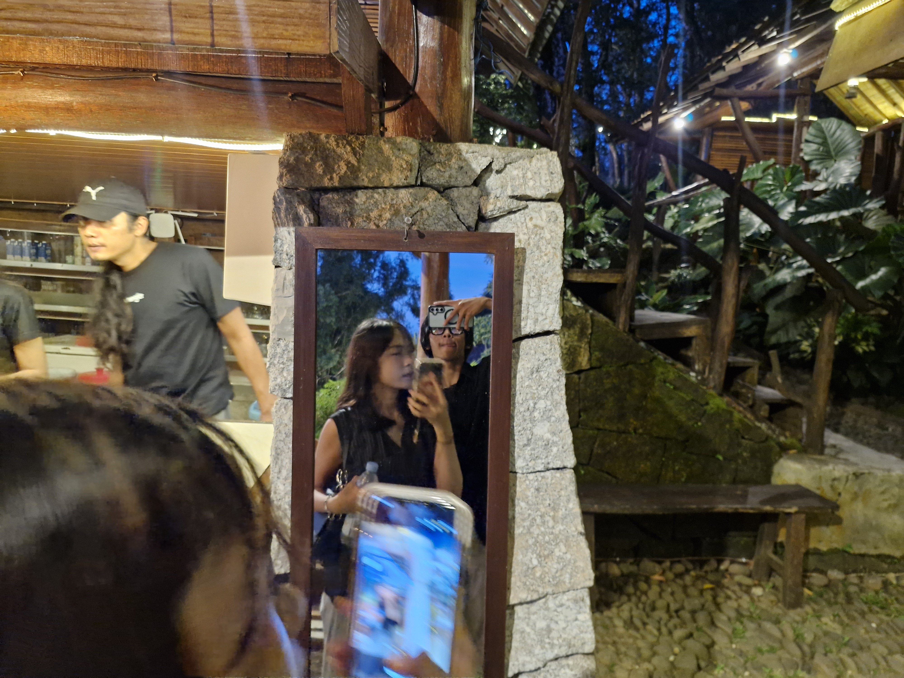
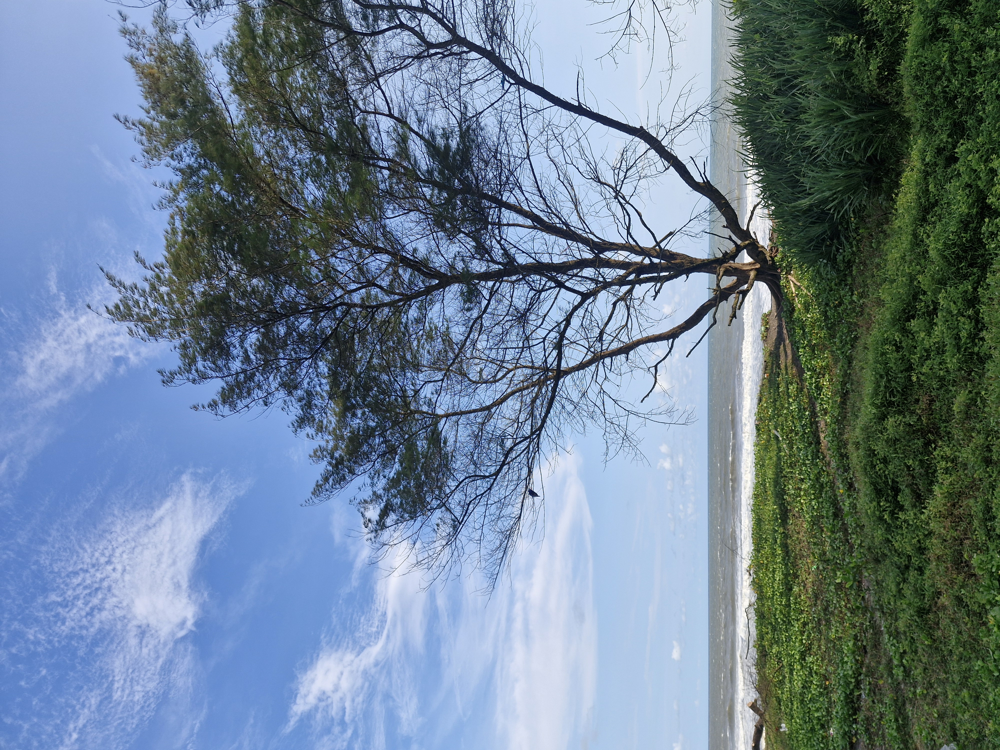

portofolio
About Me
Hello! I am Virgi Herwan
Saya mahasiswa Informatika, junior programmer, dan fotografer. Saya suka membangun pengalaman web yang terasa modern, punya karakter, dan tetap nyaman dipakai tanpa beban efek yang berlebihan.
Fokus saya adalah menciptakan harmoni antara fungsionalitas kode dan estetika visual, memastikan setiap proyek memiliki identitas yang kuat dan eksekusi yang rapi.
Let's create something unforgettable together.

Web Ecosystem
Eksplorasi UI web, landing page, dan pengalaman digital yang lebih rapi serta responsif. Fokus pada performa dan kemudahan penggunaan.

Macro ML Guide
Analisis gameplay Mobile Legends yang fokus ke tempo, map control, dan objective play. Pendekatan strategis untuk memenangkan permainan.
.jpg)

.jpg)
Urban Vision
Koleksi visual dengan komposisi yang menonjolkan mood, detail objek, dan atmosfer alam. Menangkap cerita di balik bayangan pohon dan senja.

.jpg)
.jpg)
Abilities
Technical Matrix
Web Ecosystem
Membangun antarmuka dan alur web yang terstruktur untuk kebutuhan sistem, dashboard, dan project berbasis data.
Gaming Meta
Menganalisis macro dan micro gameplay dengan pendekatan strategi, rotasi map, dan pengambilan objective.
Photon Capture
Mengolah visual dan komposisi foto agar terasa kuat secara mood, dokumentasi, dan storytelling.

Contact Information
Phone
+62 878 1710 9749
Yogyakarta Base
virgilaki@gmail.com
Address
kraton
Yogyakarta
Website
jakkasigma.com